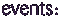

|
 |
|
| 12:11:97 |
ICA, Lauch of the New Media Center
Three installations commissioned by Sun Microsystems and the ICA. |
| a week:6:97 |
Montreal/ FCMM
AudioRom did a live performance in the New Media lounge.
There was a live video link with London an Barcelona. |
| 24:9:96 |
ISEA:DEAF/DUMB
As part of DUMB which was a sub festival
of ISEA. This was AudioRoms debut gig in
Rotterdam along with AntiRom and Header. |
| 15-17:11:96 |
Digital Dreams 4: Across 2 Cultures
This comprised of an interactive sound
workshop,and a workshop presentation run
by Audiorom, within a 3 day festival,
exploring the relationship between art
and science. |
| date |
AudioRom Launch
This was the launch for the Beta1 CD held in Soho, London,
where AudioRom created an
interactive music space. |